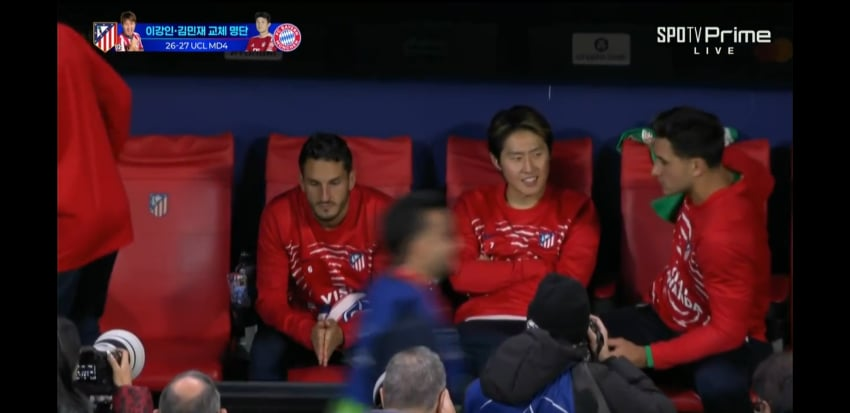
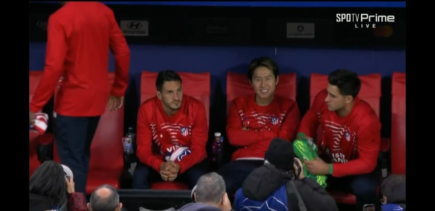

— · 81 · 2026-11-04 10:51:01 · 원문


아주 기분좋음
수집 당시 댓글 81개
빙결구 · 11.04 05:57:55
↳ 답글 · ㅇㅇ · 11.04 05:58:18
ㅇㅇ · 11.04 05:58:56
ㅇㅇ · 11.04 05:59:03
해갤러1 · 11.04 06:00:59
주노원챔인테르팬 · 11.04 06:02:18
ㅇㅇ · 11.04 06:02:53
ㅇㅇ · 11.04 06:03:44
땨뗘(봇) · 11.04 10:51:06
ㅇㅇ · 11.04 10:52:09
2456778 · 11.04 10:52:14
↳ 답글 · ㅇㅇ · 11.04 10:53:11
ㅇㅇ · 11.04 10:53:42
↳ 답글 · ㅇㅇ · 11.04 10:56:32
↳ 답글 · ㅇㅇ · 11.04 11:08:25
↳ 답글 · ㅇㅇ · 11.04 11:13:22
↳ 답글 · ㅇㅇ · 11.04 11:20:24
↳ 답글 · ㅇㅇ · 11.04 11:35:11
↳ 답글 · ㅇㅇ · 11.04 11:39:16
↳ 답글 · ㅇㅇ · 11.04 12:39:55
↳ 답글 · ㅇㅇ · 11.04 14:53:00
↳ 답글 · ㅇㅇ · 11.04 15:54:10
↳ 답글 · ㅇㅇ · 11.04 15:59:25
ㅇㅇ · 11.04 10:54:31
ㅇㅇ · 11.04 10:56:19
ㅇㅇ · 11.04 10:58:09
↳ 답글 · ㅇㅇ · 11.04 11:10:32
↳ 답글 · ㅇㅇ · 11.04 11:15:24
↳ 답글 · ㅇㅇ · 11.04 11:15:48
ㅇㅇ · 11.04 11:03:30
ㅇㅇ · 11.04 11:03:58
ㅇㅇ · 11.04 11:04:01
ㅇㅇ · 11.04 11:04:46
ㅇㅇ · 11.04 11:09:28
↳ 답글 · ㅇㅇ · 11.04 11:10:01
↳ 답글 · 살모내란균 · 11.04 11:28:23
ㅇㅇ · 11.04 11:09:58
너도나도죽창한방 · 11.04 11:11:20
ㅁㅇㄻㄹ · 11.04 11:12:09
ㅇㅇ · 11.04 11:13:39
원또 · 11.04 11:15:07
ㅇㅇㅇㅇ · 11.04 11:15:15
ㅇㅇ · 11.04 11:17:35
살모내란균 · 11.04 11:28:39
ㅇㅇ · 11.04 11:29:54
ㅇㅇ · 11.04 11:32:29
ㅇㅇ · 11.04 11:39:01
ㅇㅇ · 11.04 11:42:40
↳ 답글 · ㅇㅇ · 11.04 11:46:56
↳ 답글 · ㅇㅇ · 11.04 12:10:53
↳ 답글 · ㅇㅇ · 11.04 13:09:24
ㅇㅇ · 11.04 11:47:16
ㅇㅇ · 11.04 11:51:11
ㅇㅇ · 11.04 11:51:56
ㅇㅇ · 11.04 12:03:54
ㅇㅇ · 11.04 12:08:26
ㅇㅇ · 11.04 13:59:35
ㅇㅇ · 11.04 14:07:20
ㅇㅇ · 11.04 14:22:48
ㅇㅇ · 11.04 14:25:47
ㅇㅇ · 11.04 15:03:30
ㅇㅇ · 11.04 15:05:12
↳ 답글 · ㅎㅎ · 11.04 16:13:29
↳ 답글 · ㅇㅇ · 11.04 16:22:24
↳ 답글 · ㅇㅇ · 11.04 16:36:51
↳ 답글 · ㅇㅇ · 11.04 16:37:29
↳ 답글 · ㅎㅎ · 11.04 16:39:51
↳ 답글 · ㅇㅇ · 11.04 16:40:14
↳ 답글 · ㅇㅇ · 11.04 16:45:58
↳ 답글 · ㅎㅎ · 11.04 16:49:33
ㅇㅇ · 11.04 15:09:04
ㅇㅇ · 11.04 15:33:05
ㅇㅇ · 11.04 15:44:27
dd · 11.04 15:44:59
↳ 답글 · ㅇㅇ · 11.04 15:51:17
ㅇㅇ · 11.04 16:16:41
ㅇㅇ · 11.04 16:32:28
ㅇㅇ · 11.04 17:05:35
ㅇㅇ · 11.04 17:14:39
JungNu · 11.04 18:47:44
환란 전 교회 휴거 · 11.04 23:40:58
댓글
수집 당시 댓글 81개
빙결구 · 11.04 05:57:55
· ㅇㅇ · 11.04 05:58:18
ㅇㅇ · 11.04 05:58:56
ㅇㅇ · 11.04 05:59:03
해갤러1 · 11.04 06:00:59
주노원챔인테르팬 · 11.04 06:02:18
ㅇㅇ · 11.04 06:02:53
ㅇㅇ · 11.04 06:03:44
땨뗘(봇) · 11.04 10:51:06
ㅇㅇ · 11.04 10:52:09
2456778 · 11.04 10:52:14
· ㅇㅇ · 11.04 10:53:11
ㅇㅇ · 11.04 10:53:42
· ㅇㅇ · 11.04 10:56:32
· ㅇㅇ · 11.04 11:08:25
· ㅇㅇ · 11.04 11:13:22
· ㅇㅇ · 11.04 11:20:24
· ㅇㅇ · 11.04 11:35:11
· ㅇㅇ · 11.04 11:39:16
· ㅇㅇ · 11.04 12:39:55
· ㅇㅇ · 11.04 14:53:00
· ㅇㅇ · 11.04 15:54:10
· ㅇㅇ · 11.04 15:59:25
ㅇㅇ · 11.04 10:54:31
ㅇㅇ · 11.04 10:56:19
ㅇㅇ · 11.04 10:58:09
· ㅇㅇ · 11.04 11:10:32
· ㅇㅇ · 11.04 11:15:24
· ㅇㅇ · 11.04 11:15:48
ㅇㅇ · 11.04 11:03:30
ㅇㅇ · 11.04 11:03:58
ㅇㅇ · 11.04 11:04:01
ㅇㅇ · 11.04 11:04:46
ㅇㅇ · 11.04 11:09:28
· ㅇㅇ · 11.04 11:10:01
· 살모내란균 · 11.04 11:28:23
ㅇㅇ · 11.04 11:09:58
너도나도죽창한방 · 11.04 11:11:20
ㅁㅇㄻㄹ · 11.04 11:12:09
ㅇㅇ · 11.04 11:13:39
원또 · 11.04 11:15:07
ㅇㅇㅇㅇ · 11.04 11:15:15
ㅇㅇ · 11.04 11:17:35
살모내란균 · 11.04 11:28:39
ㅇㅇ · 11.04 11:29:54
ㅇㅇ · 11.04 11:32:29
ㅇㅇ · 11.04 11:39:01
ㅇㅇ · 11.04 11:42:40
· ㅇㅇ · 11.04 11:46:56
· ㅇㅇ · 11.04 12:10:53
· ㅇㅇ · 11.04 13:09:24
ㅇㅇ · 11.04 11:47:16
ㅇㅇ · 11.04 11:51:11
ㅇㅇ · 11.04 11:51:56
ㅇㅇ · 11.04 12:03:54
ㅇㅇ · 11.04 12:08:26
ㅇㅇ · 11.04 13:59:35
ㅇㅇ · 11.04 14:07:20
ㅇㅇ · 11.04 14:22:48
ㅇㅇ · 11.04 14:25:47
ㅇㅇ · 11.04 15:03:30
ㅇㅇ · 11.04 15:05:12
· ㅎㅎ · 11.04 16:13:29
· ㅇㅇ · 11.04 16:22:24
· ㅇㅇ · 11.04 16:36:51
· ㅇㅇ · 11.04 16:37:29
· ㅎㅎ · 11.04 16:39:51
· ㅇㅇ · 11.04 16:40:14
· ㅇㅇ · 11.04 16:45:58
· ㅎㅎ · 11.04 16:49:33
ㅇㅇ · 11.04 15:09:04
ㅇㅇ · 11.04 15:33:05
ㅇㅇ · 11.04 15:44:27
dd · 11.04 15:44:59
· ㅇㅇ · 11.04 15:51:17
ㅇㅇ · 11.04 16:16:41
ㅇㅇ · 11.04 16:32:28
ㅇㅇ · 11.04 17:05:35
ㅇㅇ · 11.04 17:14:39
JungNu · 11.04 18:47:44
환란 전 교회 휴거 · 11.04 23:40:58